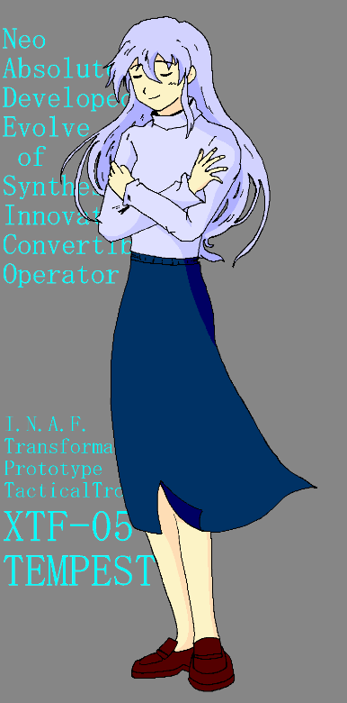

人類がその増えすぎた人口を母なる星から宇宙に移住させてから、１世紀近くが経っていた。人々は母なる星の遥か高く空に居住地「コスモアーク（宇宙の箱舟）」を建造し、新たな宇宙への足がかりとした。
しかし、母なる星「国際統合政府」の怠慢により、箱舟は“新たなる地”を見つけることが出来ないまま、増え続ける人口を受け入れるだけの“容器”に成り下がった。
それでも人々はそこで暮らし、子孫を育み、命を繋いでいった。宇宙暦100年。
月の裏側に位置するラグランジェ・ポイント（地球と月の重力がつりあう安定した地点）L2、コスモアーク群の独立宣言をきっかけに、かねてより統合政府に不満を持っていた地方の政府が同調して一斉に蜂起、地球規模の戦争が始まった。「第三次アーク大戦」の勃発である。
互いにどちらが優勢かもわからないまま戦況は泥沼と貸し、2年の歳月が過ぎ去った・・・・・・。
機動妖精撫子
作 ＴＲＡＣＥ
「これこそ、私の肉の肉。
私の骨の骨。
これをこそ『ナデシコ』と呼ぼう。
まさに、私の血から取られたものだから・・・・・・」「これからのアナタは１２時間の間、
『コウサカ＝クミコ少尉』です」「貴様にナデシコは渡さん！
ナデシコは、私ひとりのものだ！！」「ナデシコ、俺に力を貸してくれ！
君はブランドのマシンなんかじゃない！！」「統合の秩序に逆らう悪しき民に、降伏する権利などない。
『ソドムの雷』で、焼き尽くすのみ！」「産めよ、増えよ、大地に満ちよ！
空に満ちて全てを従わせよ！！
さぁ、放たれよフェンリル。
ラグナロクの幕開けだ！！」「アナタは私を助けてくれたから、
私がマシンじゃないって言ってくれたから、
だから今度は、私がアナタを助ける番・・・・・・」
シリーズタイトル

フライト１．「嵐の中に咲く花」
その日、彼と「彼女」は出逢ったフライト２．「タイムリミットは１２時間」
クストとクミコは恋人？同一人物？？フライト３．「運命の乙女たち」
クストと妖精、運命の出逢いフライト４．「強襲！シンガポール奪回作戦」
エースパイロットが一堂に集結！フライト５．「黒い花」
コスモ軍の「クミコ」が牙をむくフライト６．「傷付いた翼」
翼を失ったクミコを襲う試練フライト７．「訣別」
さまざまな決着とともに、舞台は最終決戦へフライト８．「孤将奮闘」
死にゆく男は、守りたい女のためにフライト９．「天使の羽根をそっと抱いて」
最終決戦、統合軍が悪の本性を剥き出しに！！エピローグ．「君去りしのち」
ナデシコの全ての謎が解ける
特別収録． 「凍りついた記憶が目覚める瞬間」
内容未定
（ちゃんと全部書けるかな・・・・・・ドキドキ）